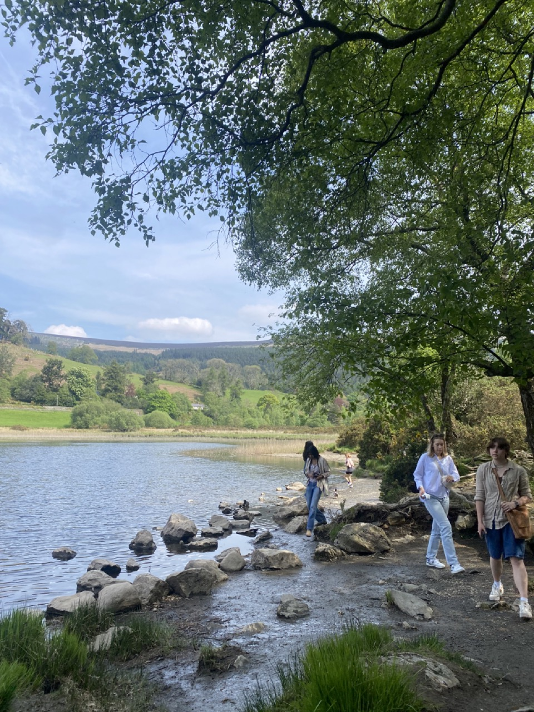
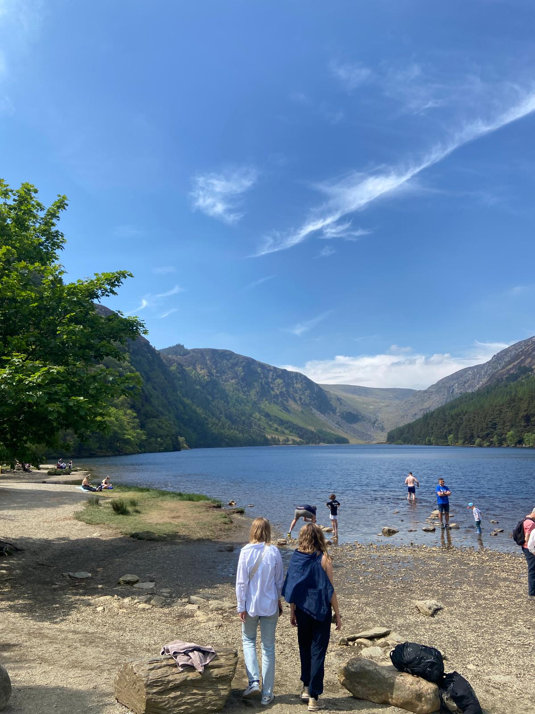
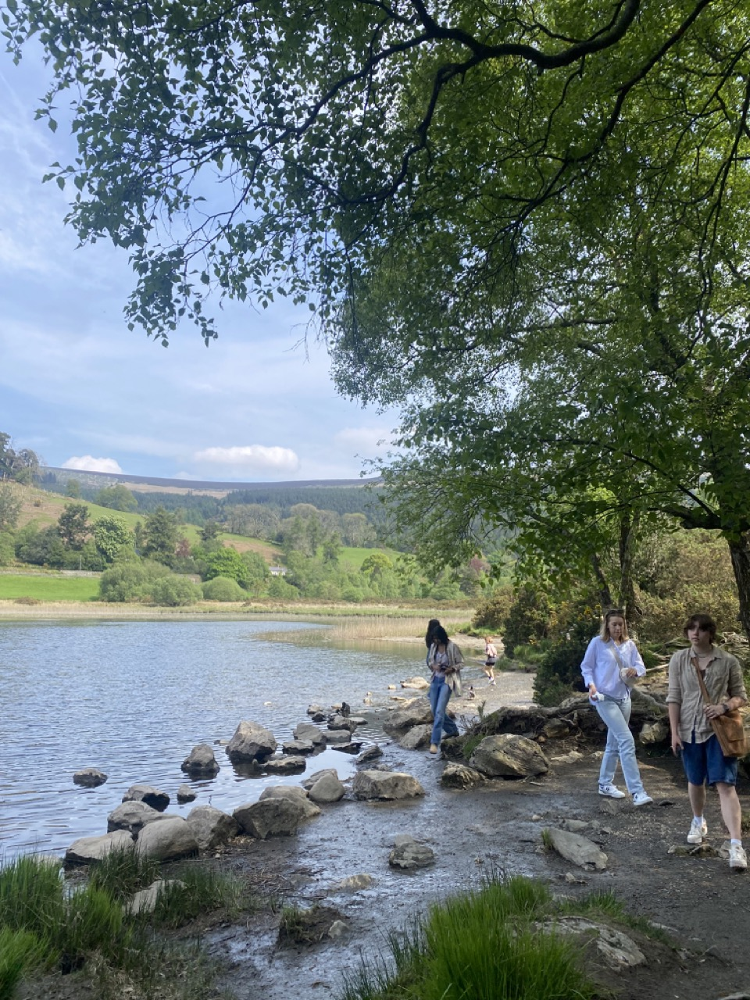
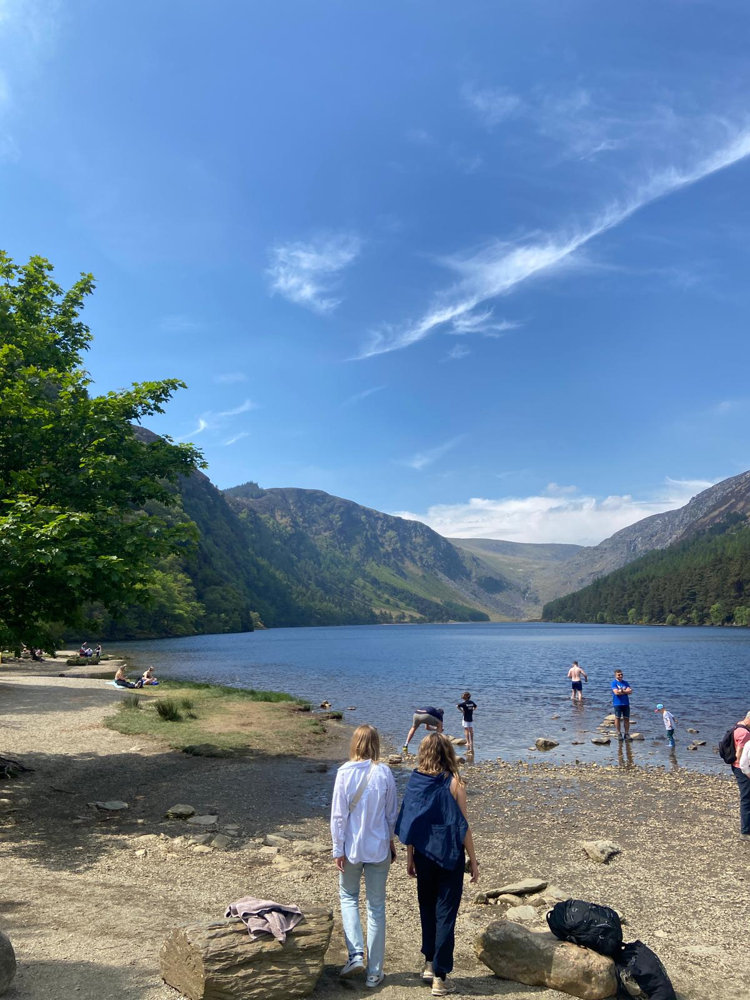

Kilkenny
Kilkenny (Irish: Cill Chainnigh [ˌciːl̠ʲ ˈxan̠ʲəj], meaning 'church of Cainnech')[2] is a city in County Kilkenny, Ireland.[3] It is located in the South-East Region and in the province of Leinster. It is built on both banks of the River Nore. The 2022 census gave the population of Kilkenny as 27,184, the thirteenth-largest urban center in Ireland.[1]
Kilkenny began with an early 6th-century ecclesiastical foundation within the Kingdom of Ossory. Following the 12th-century Norman invasion of Ireland, Kilkenny Castle and a series of walls were built to protect the burghers of what became a Norman merchant town.[7] William Marshall, Lord of Leinster, gave Kilkenny a charter as a town in 1207. By the late 13th century, Kilkenny was under Hiberno-Norman control. The Statutes of Kilkenny, passed at Kilkenny in 1367, aimed to curb the decline of the Hiberno-Norman Lordship of Ireland. In 1609, King James I of England granted Kilkenny a Royal Charter, giving it the status of a city. Following the Irish Rebellion of 1641, the Irish Catholic Confederation, also known as the "Confederation of Kilkenny", was based in Kilkenny and lasted until the Cromwellian conquest of Ireland in 1649. From 1840 onwards, Kilkenny has not been administered as a city under local government law, but the Local Government Reform Act 2014 provides for "the continued use of the description city".
Gallery


 


